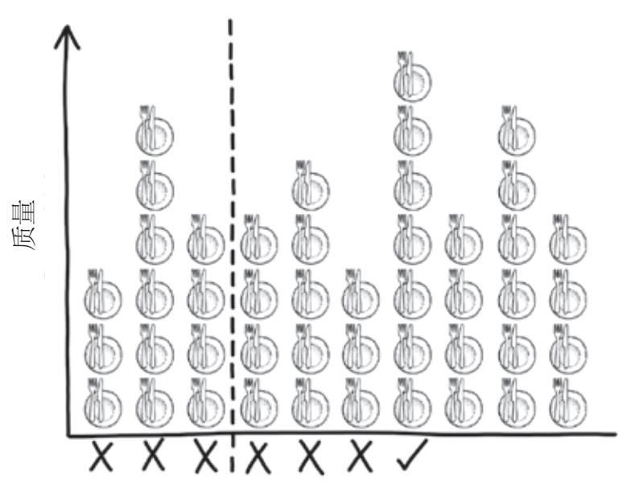
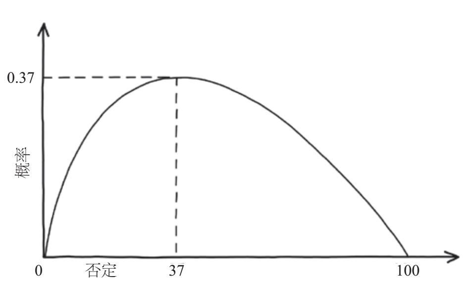

“在100米后右转……再右转。”卫星导航系统建议道。新手司机罗伯托·法哈特驾车载着他的妻子和两个孩子按照导航的建议行进。他几分钟前刚刚接替了他的妻子——一位有15年驾驶经验的资深司机——坐上了驾驶位。然而，刚一转弯，一辆行驶在反向车道的两吨重的奥迪车以每小时45英里的速度撞上了他这辆车的副驾驶位。法哈特的注意力都集中在导航上，没看到不能右转的警示路标。庆幸的是他没有受伤，但他4岁的女儿阿米莉亚则没那么幸运，三小时后她在医院离开了人世。
我们越来越依赖卫星导航系统等电子设备，它们让焦虑的生活变得更简单。当需要确定从A到B的最快路线时，卫星导航系统会进行复杂的计算。以算法形式按需计算，这是完成任务的唯一方法。对一台设备来说，在相隔遥远的起点和终点之间遍历所有可能的路线是几乎不可能做到的。大量的起点和终点会带来天文数字级别的计算。问题如此之难，而卫星导航算法很少出错，这实在令人惊叹。但是，一旦错误发生，其结果就将是灾难性的。
算法是指一系列精确描述任务的指令，这个任务可以是整理你的唱片收藏，也可以是做饭。但是，人类历史上有记录的最早算法本质上都是数学算法。古埃及人用一种简单的算法计算两个数字的乘积，古巴比伦人则掌握计算平方根的规则。公元前3世纪，古希腊数学家埃拉托色尼发明了一种筛法（一种可以从一系列数字中筛选出素数的简单算法），阿基米德则用穷举法计算出圆周率π的数值。
在启蒙运动前的欧洲，随着机械操作技能的提高，算法在时钟和后来的齿轮计算器上得到了具体实现。19世纪中期，博学多才的查尔斯·巴贝奇制造了第一台机械计算机，先锋数学家阿达·洛芙莱斯为它编写了第一个计算机程序。事实上，洛芙莱斯意识到巴贝奇的发明可能远远超出他们最初的设想，它不仅可以进行纯粹的数学计算，也能对音符、字母（可能更重要）等进行编码和操作。第二次世界大战期间，盟军利用第一代电子–机械计算机以及纯粹的电子计算机破译了德军密码的算法。虽然从理论上讲，这些算法可以靠人工实现，但这些原型计算机执行命令的速度和准确度是人类永远无法企及的。
如今的计算机执行的日益复杂的算法已经成为高效处理我们的日常事务的重要工具，比如用搜索引擎查询信息，用手机拍照，玩电脑游戏，以及向你的私人数字助理询问今天下午天气如何。我们不再接受任何旧的解决方案：我们希望搜索引擎能够给出与我们所提问题最相关的答案，而不只是它随意找到的一个答案；我们想准确地知道下午五点下雨的概率，从而决定是否需要带上雨衣去上班；我们希望卫星导航系统能够指引我们用最快的速度从A到达B，而不是随意选一条路线。
从大多数算法的定义（完成任务的指令列表）中，我们往往看不到输入和输出是什么，但正是这些数据让算法变得很重要。比如，对于一份食谱来说，输入是食材，输出是摆在桌子上的饭。对于卫星导航系统，输入是你指定的起点和终点及设备内存中的地图，输出是计算机为你选定的路线。如果没有这些与现实世界连接的输入和输出，算法就只是抽象的规则集合。若算法出现故障，通常是因为算法的输入不正确或者输出不是我们想要的，而不是规则本身出了错。
在本章中，我们将发现日常生活中无处不在的算法优化背后的数学原理：从谷歌搜索结果的排序方式到脸书给我们推送新闻的原理。这里有解决困难问题的看似简单的算法，以及现代技术巨头所依赖的算法，比如谷歌地图的导航系统和亚马逊网站的投递路线。我们也会从现代计算机化的技术世界中抽身出来，将一些算法直接交给你来掌控：你可以使用简单的优化算法来预订最佳的火车座位或选择超市中最短的排队队伍。
虽然某些算法可以执行难以想象的复杂任务，但有时它们的性能并不能达到最优。对法哈特一家来说悲剧的是，一份过时的地图导致他们的卫星导航系统给出了错误的指示方向。路线寻找规则本身并没有错，如果地图是最新的，事故很可能就不会发生。他们的故事展示了现代算法的巨大力量。这些难以置信的工具已经散布到我们日常生活的方方面面，带来了诸多便利，我们不必担心。与此同时，我们必须给予这些算法应有的尊重，并严格监督其输入和输出。然而，有人的监督，就有可能出现审查和偏见。如果我们考虑到人为控制受到约束时可能发生的情况，我们就会发现算法本身的编码可能已植入了偏见——它的创造者的倾向。虽然算法很有用，但了解它们的内部工作原理，而不是盲目地相信它们不会出错是十分重要的，不但能节省时间、金钱，甚至还可以挽救生命。
2000年，克雷数学研究所公布了“21世纪七大数学难题”，这7个问题被视为数学领域尚未解决的最重要的问题。[1]这7个问题是：霍奇猜想，庞加莱猜想，黎曼假设，杨–米尔斯场的存在性与质量间隙问题，纳维–斯托克斯方程解的存在性和光滑性问题，伯奇与斯温纳顿–戴尔猜想，P vs NP问题。虽然这些术语除了在一些较小的数学子领域之外几乎没有人知道，但该研究所的主要捐赠者兰登·克雷认为，当他为每个问题的证明或反证支付100万美元时，就能充分表明这些问题的重要性了。
在本书成书期间，只有庞加莱猜想这一个问题被解决了。庞加莱猜想是一个拓扑领域的问题。你可以将拓扑学视为关于面团的几何学（关于形状的数学）。在拓扑学中，一个物体本身的实际形状并不重要，相反，物体是按其拥有的孔洞数分类的。比如，拓扑学家认为网球、橄榄球或者飞盘之间是没有区别的。如果它们都是由面团做成的，从理论上说，它们就可以被压扁、拉伸或进行其他操作，从一种球变成另一种球，而不需要在面团上制造或堵住任何洞。然而，对拓扑学家来说，这些物体本质上不同于橡胶圈、自行车内胎或篮球筐，后面这三种物体像硬面包圈一样，中间都有一个孔洞。有两个孔洞的数字8和有3个孔洞的椒盐卷饼在拓扑学中又属于更加不同的物体。
1904年，法国数学家亨利·庞加莱指出，四维空间中最简单的形状可能是四维球体。为了解释庞加莱所说的“简单”，想象用一根绳子缠绕一个物体。如果你拉紧绳子使其完全陷入物体中并消失，那么该物体在拓扑学上就等同于球体。这个概念被称为单连通性。如果你用绳子无法完成这一操作，你的拓扑对象就更加复杂。想象一下，将绳子从下至上穿过硬面包圈的中心，现在，当你拉动绳子时，硬面包圈使绳子无法收紧，绳子也不会消失。硬面包圈有一个洞，本质上比没有洞的足球更复杂。三维情形下的结果众所周知，但庞加莱提出在四维空间中该结果将保持不变。他的猜想后来被推广为在任何维度的空间中该结果都成立。然而，在这7个难题被宣布时，这个猜想在所有其他维度上都被证明是成立的，只剩下庞加莱原始的四维猜想仍未得到证明。
2002—2003年，深居简出的俄罗斯数学家格里戈里·佩雷尔曼在拓扑学社群里分享了三篇数学论文，[2]旨在从4个方面解决这个问题。几个数学家团队花了三年的时间证实了他的证明是正确的。2006年，佩雷尔曼在40岁（这是菲尔兹奖获得者的年龄上限）时获得了数学界的诺贝尔奖——菲尔兹奖。虽然他的获奖甚至在数学领域之外也掀起了一些小波澜，但更让人意想不到的是佩雷尔曼成为第一个拒领菲尔兹奖的人。在他的拒绝声明中，佩雷尔曼说：“我对金钱或名望不感兴趣，我不想像动物园里的动物一样被参观。”2010年，克雷数学研究所最终对佩雷尔曼的证明感到满意，认为他足够有资格获得100万美元奖金，但他仍然拒绝接受这笔钱。
虽然佩雷尔曼的证明在纯粹的数学领域无疑是一项非常重要的工作，但证明庞加莱猜想几乎没什么实际用处。其他6个问题大多也是这种情况，且在本书撰写之时都未得到解决。然而，第七个问题“P vs NP问题”的证明或反证在网络安全和生物技术等多个领域中都会产生广泛的影响。
验证问题的解决方案是否正确通常比得到解决方案更容易，这是P vs NP问题的关键。这个最重要的开放性数学问题是，是否每一个能被计算机有效验证的问题也可以被计算机有效地解决。
打个比方，想象你正在拼一幅没有明显特征的拼图，比如清澈的蓝天。尝试所有可能的碎片组合将是一项艰巨的工作，说它需要很长很长时间都不为过。但一旦拼图完成，就很容易检查出正确与否。关于效率的更严谨的定义可以表达为，随着问题变得越发复杂，即当拼图碎片增多时，算法的运行速度可以有多快。P指的是可以快速解决的一系列问题（在所谓的“多项式时间”中），NP指的是可以快速检验但不一定能快速解决的问题（代表“非确定多项式时间”）。通过快速解决问题，就可以验证我们找到的解决方案正确与否，所以P问题是NP问题的一个子集。
现在想象建立一个算法去完成一个通用的拼图游戏。如果该算法属于P问题，那么解决它所需花费的时间可能取决于碎片的数量，或者碎片数量的平方、立方甚至更多次幂。比如，如果算法的运行时间取决于碎片数量的平方，那么完成一幅有2个碎片的拼图可能需要4（2的平方）秒，完成一幅有10个碎片的拼图需要100（10的平方）秒，完成一幅有100个碎片的拼图需要10 000（100的平方）秒。这听起来耗时相当长，但仍然在几个小时的范畴内。如果该算法是个NP问题，解决它的时间可能就会随拼图碎片的数量呈指数增长。有2个碎片的拼图可能还是需要4（2的平方）秒，但有10个碎片的拼图则可能需要1 024（2的10次方）秒，有100个碎片的拼图需要1 267 650 600 228 229 401 496 703 205 376（2的100次方）秒，远远超过自大爆炸至今的时间。随着拼图碎片数量的增多，两种算法都需要花更长的时间才能完成任务，但随着问题规模的增加，解决通用NP问题的算法很快就会不再适用。总的来说，P也可以代表那些可能解决的问题，而NP代表实际上不能解决的问题。
P vs NP问题也是在问所有NP问题（可以快速检验但没有已知的快速求解算法的问题）是不是实际上也属于P问题。有没有可能NP问题存在一种实用的求解算法，只是我们还没有找到？可否用简单的数字表达式表示P等于NP？如果确实如此，那么正如我们将要看到的那样，即使在日常工作中，这个问题的潜在影响力也是巨大的。
*
尼克·霍恩比在20世纪90年代出版的经典小说《失恋排行榜》中有一个主角叫罗伯·弗莱明，他痴迷音乐，开了一家二手唱片店，名为冠军黑胶唱片。罗伯定期根据不同类别整理他那数目庞大的唱片集：按字母顺序排列，按时间顺序排列，甚至按他买唱片的顺序排列。对音乐爱好者来说，定期分类整理唱片不仅是一种宣泄情绪的方式，还有助于快速查询数据，以及展示其多个方面的细节。当你点击一个按钮，并按日期、发件人或主题将邮件排序时，这表明你的电子邮件客户端正在执行一种高效的排序算法。当你选择通过“最佳匹配”、“最低价格”或“最快结束”来查看与你的搜索项相匹配的条目时，易贝网也在执行一种排序算法。一旦谷歌确定了相关网页与你输入的搜索项的匹配程度，它就会快速地对其进行排序，并以正确的顺序呈现在你眼前。实现这一目标的高效算法备受追捧。
若想要对一些项目进行排序，方法之一是创建一个包含所有排列方式的列表，然后检查每个列表看排序是否正确。想象一下，你有一个非常小的唱片集，包括齐柏林飞艇乐队、皇后乐队、酷玩乐队、绿洲乐队和ABBA乐队的各一张专辑。仅仅是这5张专辑，就有120种可能的排序方式；如果是6张专辑，就有720种排序方式；如果是10张专辑的话，排序方式则会超过300万种。随着专辑数量的增加，不同排序方式的数量激增，以至于任何有自知之明的唱片爱好者都会放弃考虑所有可能的排序方式，因为实在是不可行。
幸运的是，正如你可能从实践经验中获知的那样，整理唱片集、书籍或DVD（数字光碟）是一个P问题，也就是有实际解决方案的问题。最简单的一种算法被称为“冒泡排序”，它的原理是：我们将唱片集中的5个乐队缩写为L、Q、C、O、A，并按字母顺序进行排列。我们按照冒泡排序的原则沿着架子从左到右查看，发现任何不按顺序排列的唱片就把它与相邻的唱片对调位置。按照这样的方式进行下去，直到所有唱片都按序排列。在第一遍扫视中，L排在Q之前，但Q和C的顺序错误，所以把它们的位置对调。冒泡排序通过将Q与O对调，再将Q与A对调，完成它的第一次扫视。此时列表为L、C、O、A、Q，Q已经到达末尾的正确位置上。在第二遍扫视中，C与L对调，A被换到O前面，至此O到达正确的位置上，顺序为：C、L、A、O、Q。之后，还需要进行两次交换，A才会到达正确的位置上，此时所有唱片完全是按字母顺序排列的。
因为有5张专辑要排序，我们需要扫视4次，每次进行4次比较才能完成。如果有10张专辑，我们就得扫视9次，每次进行9次比较。这意味着在排序过程中，我们必须完成的工作量几乎等于排序对象数量的平方。如果你有一个大唱片集，那么这将意味着较大的工作量，但30张专辑也只需要进行数百次比较即可完成。而如果我们用粗暴的穷举算法，可能就需要检视数万亿次可能的排序。尽管取得了这种巨大的进步，但计算机科学家常常嘲笑冒泡排序效率低下。在实际应用中，脸书的新闻推送或照片墙（Instagram）的照片推送，会根据最新优先级对数十亿条帖子进行排序和显示，他们摒弃了简单的冒泡排序，取而代之的是更现代、更高效的同类算法。比如，归并排序算法的原理是将待排列对象分成小组，然后快速对这些小组进行排序，再把它们按正确的顺序合并在一起。
在2008年美国总统大选的筹备阶段，约翰·麦凯恩在获得候选人资格后不久，应邀到谷歌公司发表演讲，讨论他的政策。时任谷歌首席执行官埃里克·施密特跟麦凯恩开玩笑说，竞选总统就像在谷歌面试一样。他继而向麦凯恩抛出了一个谷歌面试问题：“在2兆内存中对100万个32位整数进行排序的最佳方法是什么？”麦凯恩看起来很沮丧，施密特却很开心，于是麦凯恩很快转向了他的下一个话题。6个月后，巴拉克·奥巴马到访谷歌，施密特向他提出了同样的问题。奥巴马看着观众，摸了摸额头，似乎陷入了不知该如何回答的窘境。感受到气氛尴尬的施密特试图帮助奥巴马回答这个问题，但奥巴马对施密特说：“不不不，我认为冒泡排序不是个好方法。”人群中的计算机科学家对他的话报以热烈的掌声和欢呼声。奥巴马出人意料的回应展现了他从容、博学的个人魅力（由其背后的精心准备支撑），他还讲了一个关于排序算法效率低的笑话。他在整个竞选活动中的表现一直非常出色，最终一路高歌，入主白宫。
*
有了高效的排序算法，如果你想重新整理书或DVD，就无须花费比宇宙寿命还长的时间。
与此相反，还有一些问题虽易于陈述，但可能需要天文数字量级的时间来解决。想象一下，你在像敦豪（DHL）或联合包裹服务（UPS）这样的大型运输公司工作，需要在轮班期间运送一些包裹，然后将货车送回公司。由于你是按照运送的包裹数量来取得报酬的，而不是所花费时间，因此你希望找到将包裹送达所有卸货点的最快路线。这是一个古老而重要的数学难题——旅行商问题——的核心。随着你的送货地点的增加，“组合爆炸”会使这一问题变得非常难，可能的解决方案的数量增长得甚至比指数还要快。如果你有30个送货地点，那么你第一次卸货有30个地点可供选择，第二次减少到29个，第三次减少到28个，依此类推。于是，你总共有30×29×28×…×3×2种不同的路线需要检验。实际上，在目的地为30个的情况下，可能的路线数量大约是265×1030。但与排序问题不同的是，解决这个问题没有捷径，没有实际的算法能在多项式时间内找到答案。检验方案的正确性与找到解决方案一样困难，因为我们还需要检验其他可能的解决方案。
在配送总部，一位物流经理可能会将每天的配送任务分配给不同的司机，并为他们规划最佳送货路线。这被称为车辆路线问题，比旅行商问题的难度更大。这两个问题随处可见，比如规划城市公交线路、收集邮箱中的邮件、在电路板上钻孔、制作微芯片和组装计算机等。
回答所有这些问题的唯一好处是，当某些任务摆在我们面前时，我们能够识别出哪些解决方案更好。如果我们的要求是送货路线短于1 000英里，那么我们可以轻松检验给出的解决方案是否符合要求，即使一开始找到这样一条路径并不容易。这也被称为“决策版本”的旅行商问题，我们只需要提供一个是或否的答案即可。这个问题属于解决起来很困难但容易验证的NP问题。
这些问题极度难解，但我们仍有可能为某些特定的问题找到确切的解决方案，虽然这种解决方案在更普遍的意义上是不可行的。安大略省滑铁卢大学组合优化学教授比尔·库克花了近250年的计算机时间，在一台并行超级计算机上算出了英国所有酒吧之间的最短路线。这一酒吧问题需要走遍49 687个地点，长度达40 000英里，平均每0.8英里就有一间酒吧。早在库克做计算之前，来自英格兰贝德福德郡的布鲁斯·马斯特斯就已经在实地研究该问题了。他保持着走访最多酒吧的吉尼斯世界纪录。截至2014年，这位69岁的老人已在46 495个不同的酒吧中消费过。从1960年开始，布鲁斯估计他在探索英国所有酒吧的过程中已经走了100多万英里，这是比尔·库克找出的最有效路线的25倍。如果你正在计划一次类似的冒险行动，或者仅仅是逛遍当地的酒吧，那么应该先参考一下库克的算法。[3]
*
绝大多数数学家都认为P和NP完全是不同类型的问题，我们永远找不到派遣销售人员或安排车辆路线的快速算法。但也许这是件好事。“决策版本”的旅行商问题堪称NP完全问题的典型范例，而一个重要的定理告诉我们，如果能够找到解决NP完全问题的实用算法，我们就能够通过转换这个算法去解决其他NP问题，并且证明P等于NP，也就是证明P和NP实际上是同一类问题。由于几乎所有的互联网密码都取决于解决某些NP问题的难度，所以一旦证明了P等于NP，对网络安全来说可能是灾难性的。
但是，从好的方面来说，我们也能够通过开发快速算法来解决各种运输问题。工厂可以高效运营，运输公司可以找到递送包裹的有效线路，并降低运费，但我们再也无法安全地网上购物了！在科学领域，证明P等于NP则可能为计算机视觉、基因测序乃至自然灾害的预测提供有效的方法。
讽刺的是，如果P等于NP，那么科学可能是最大的赢家，但科学家却可能会成为最大的输家。一些最令人震惊的科学发现在很大程度上依赖于那些训练有素、专注于自身领域的人的创造性思维，比如达尔文的自然选择理论、安德鲁·怀尔斯对费马大定理的证明、爱因斯坦的广义相对论和牛顿的运动方程。如果P等于NP，计算机就能找到任何可证明数学定理的证明过程，人类的许多最伟大的智力成就会被机器人的工作复制和取代，很多数学家也会失业。从本质上讲，P vs NP问题似乎是一场检验人类创造力是否会被机器取代的战争。
有些优化问题，比如旅行商问题，解决起来非常困难，因为我们试图从一个极大的可能集合中寻找最佳解决方案。但有时候，我们宁愿接受一个又快又好的解决方案，而不是一个最佳却很慢的解决方案。在开始工作之前，我不需要找到最佳方法让我包中物品占据的空间最小，而只需找到一种把我要带的东西都放进包里的方法。如果是这样，我们可以在解决问题时选择一条捷径。我们可以使用启发式算法（常识近似或经验法则），找到相关问题的最佳解决方案的近似解。
贪心算法就是这样一种解决方案。这种短视算法的原理是：通过做出最佳的局部选择，试图找出最佳的全局解决方案。虽然这种算法能够快速有效地工作，但无法保证产生最佳解决方案，甚至不能提供一个足够好的解决方案。想象一下，你到了一个新地方，想爬上附近最高的一座山，俯瞰这片土地。贪心算法可能会先找到当前位置的最陡斜坡，然后朝那个方向迈出一步。每一步都重复这个过程，最终就会让你到达一个再也无法向上爬的地点，这意味着你来到了山顶，但它不一定是最高的山峰。如果你想登上最高的山峰并获得最佳视野，那么这种贪心算法并不一定能帮你实现心愿。你刚刚爬上山顶的路线可能一开始更陡峭，而到达最高山峰的路线一开始却并不陡峭，由于你的启发式短视，你一开始就走错了路线。贪心算法可以找到解决方案，但并不总能找到最佳解决方案。然而，对于一些特殊问题，贪心算法能够给出最佳解决方案。
卫星的导航系统相当于由路段连接的一系列交叉口。导航系统要通过迷宫般的道路和交叉口找到两个位置之间的最短路线，这个问题听起来就像旅行商问题一样困难。实际上，随着道路和交叉口数量的增加，可能的路线数量也会迅速增加。即便只有少量的道路和交叉口，可能的路线数量也会达到数万亿条。如果找到解决方案的唯一方法是计算所有可能的路线，并比较每条路线经过的距离，这就是一个NP问题。幸运的是，对使用卫星导航系统的人来说，有一种经证明更有效的方法——迪杰斯特拉算法，这种算法能够在多项式时间内找到最短路径问题的解决方案。[4]
假如你想找到从你家到电影院的最短路线，迪杰斯特拉算法会从电影院向前倒推。如果从你家到与电影院相连的所有交叉口的最短距离是已知的，这项工作将变得非常简单。我们可以把从你家到附近路口的路径长度与连接该路口到电影院的路径长度相加，得出到达电影院的最短路线。当然，从你家到附近交叉口的距离是未知的。然而，利用相同的方法，你可以通过从你家到连接倒数第二个交叉口的最短路线找到到达倒数第一个交叉口的最短路线。运用这种递归逻辑，通过交叉口找交叉口，最后你将回到旅途开始的地方，也就是你的家。通过道路网找出最短路径只需要我们反复做出好的局部选择，即一种贪心算法。为了重构路线，我们只需跟踪我们在实现这个最短距离时必须通过的交叉口。当你使用谷歌地图帮你找到去往电影院的最佳路线时，迪杰斯特拉算法的某些变体很可能正在幕后处理数据。
当你到达电影院去支付停车费用时，售票机很可能不会提供零钱。如果你的口袋里有足够多的硬币，那么你可能想尽量补上确切的差额。大多数人都能想到的一个贪心算法是，按顺序投入硬币，每次投入小于差额的最大面额硬币。
大多数货币，包括英国、澳大利亚、新西兰、南非和欧洲大陆国家的货币，都是1–2–5结构，硬币或纸币的面额都以这种方式增加。比如，英国的货币系统包含1便士和2便士硬币，接下来是10、20和50便士硬币，然后是1英镑和2英镑硬币，接着是5英镑钞票，之后是10英镑、20英镑和50英镑钞票。因此，若要运用贪心算法在这个系统中组合出58便士，我们会先选择50便士硬币，还剩下8便士。此时如果加上20便士或10便士硬币，金额就会超过58便士，所以接下来我们应选择5便士，然后是2便士，最后是1便士。事实证明，对于所有1–2–5结构的货币系统，以及美国货币系统，上述贪心算法确实能用最小数量的硬币组合出我们需要的任何金额。
相同的算法未必适用于每种货币。如果出于某种原因，4便士的硬币也存在，那么8便士差额就可以简单地用两个4便士硬币组成而无须用5、2和1便士三枚硬币组成。每个硬币的面额至少是下一个比它小的硬币面额的两倍，这样才能满足贪心算法。这也解释了1–2–5结构的普遍性，相邻面额之间2或2.5的比率可以保证贪心算法正常工作，也符合简单的十进制系统。因为找零钱是一个十分普遍的程序，几乎世界上的所有货币都被兑换过，因此满足贪心算法的条件很重要。塔吉克斯坦货币系统包含5、10、20、25和50迪拉姆，是唯一一个不满足贪心算法条件的货币系统。用两个20迪拉姆币组合成40迪拉姆币，比用贪心算法得到的25、10和5迪拉姆币的组合方式要更便捷。
关于贪心算法有个有趣的问题：你试过在麦当劳点43块麦乐鸡块吗？这听起来似乎不太可能，但这些裹面油炸食物却引出了一些有趣的数学问题。在英国，麦乐鸡最初以每份6块、9块或20块的方式供应。当数学家亨利·皮乔托在麦当劳与儿子共进午餐时，他想弄清楚以这三种规格的组合，无法购买到多少块麦乐鸡块。他的答案中包含：1、2、3、4、5、7、8、10、11、13、14、16、17、19、22、23、25、28、31、34、37和43。这些数字被称为“麦乐鸡数”，除它们之外的所有其他数字都可以实现。使用给定数字集的组合无法生成的最大数字叫作弗罗贝尼乌斯范数，所以，麦乐鸡块的弗罗贝尼乌斯范数就是43。然而，当麦当劳开始把4块鸡块当成一份来销售时，弗罗贝尼乌斯范数就从43降至11。讽刺的是，即使加入了这种产品规格，用贪心算法组合43块麦乐鸡块的尝试依然失败了（两份20块加起来直接得到40块，但没有每份3块的组合）。尽管现在的免下车餐厅能组合出43块麦乐鸡块，但通过机器下单仍然是一个难题。
当贪心算法起作用时，它们确实是解决问题的高效方法。但是，当它们不起作用时，情况可能比无用更糟糕。假如你想去攀登附近最高的山峰，融入大自然，但却因为遵循了一套死板的贪婪算法而被困在后花园的鼹鼠丘顶上，此时贪心算法就不是最优选择。幸运的是，有许多算法都是受到大自然的启发产生的，它们可以帮助我们走出局部峰值的困境。
其中一类算法叫蚁群优化，它能在计算机模拟程序中生成蚂蚁大军，探索一个基于现实问题的虚拟环境。比如，在解决旅行商问题时，蚂蚁在邻近的目的地之间行走反映了现实中的蚂蚁只能感知局部环境的能力。如果蚂蚁在所有点的周围都找到一条短路线，它们就会在这条路线上释放信息素引导其他蚂蚁。于是，更受欢迎也就是更短的路线得到强化，从而吸引更多蚂蚁。与现实世界一样，沉积的信息素会蒸发，如果目的地发生变化，蚂蚁可以灵活地重构最快的路线。我们可以利用蚁群优化算法寻找NP问题的有效解决方案，比如行车路线问题，并回答生物学领域的一些棘手问题，比如蛋白质如何由简单的一维氨基酸链折叠成复杂的三维结构。

蚁群优化只是众所周知的群体智能算法之一。尽管只与少数邻居进行局部交流，但成群的椋鸟或鱼群却表现出极其迅速且连贯的方向变化。比如，有关鱼群边缘的捕食者信息会被迅速传播到鱼群另一侧。借助这些局部交互规则，算法设计人员可以派遣大量连接畅通的人工代理去环境中探索。它们快速的群体沟通，使它们能够与其他个体在寻找最佳环境时就所得到的信息保持联系。
自然界中最著名的算法就是进化。拿进化的最简单形式来说，它通过结合父母的特征来产生下一代。如果后代能够更好地在周围环境中生存和繁殖，他们又会将自己的特征传递给下一代。有时几代之间会发生突变，产生新的特征，这些特征可能比种群的既有特征更好，也可能更差。三个简单的规则——选择、组合和变异——足以形成生物的多样性，从而解决地球上的一些棘手的问题。
在赞颂生物进化之前，我们必须认识到，进化的解决方案虽然往往是好的，但很少是完美的。我们在关于野生动物的纪录片或关于自然世界的文章中看到，动物完全适应其所处的环境并不罕见。比如，居住在沙漠中的袋鼠可以一辈子不喝水，而从食物中汲取需要的所有水分；诺德鱼已经进化出抗冻蛋白，可以在零摄氏度以下的海洋中生存。由此可见，进化可以使动物适应恶劣的环境。
然而，对完美的追求不应与进化论对可能性的盲目探索混为一谈。进化通常会找到一种解决方案，它比以前应对该环境的所有解决方案更好，但不一定是最佳方案。
英国的红松鼠种群就是一个典型的例子。凭借锋利的爪子、灵活的后脚和对于保持身体平衡至关重要的长尾，红松鼠已充分适应了爬树去寻找食物的生存方式。红松鼠的牙齿一生都在不断生长，这使得它们可以尽情地咬开坚硬的坚果外壳，牙齿却不会受损。它们似乎完全适应了环境，直到一个更适应这种环境的亲戚到来了。体形明显更大的灰松鼠寻找食物的能力更强，吃得也更多，还能更有效地消化和储存食物。虽然灰松鼠从未猎捕红松鼠，但其良好的环境适应性使它们很快就占据了英格兰和威尔士的阔叶林地，超越了红松鼠并占据了其生态位。我们对许多物种的典型适应性的感知，也许只是我们对一个真正完美的解决方案的有限想象，而不是说进化真的找到了最佳方案。
尽管进化找到的不一定是最佳解决方案，但这种众所周知的自然算法的核心原则已被计算机科学家多次借鉴，其中最著名的就是遗传算法。这些工具被用于解决调度问题（包括为主要的体育联盟设计赛程表），并为诸如背包问题等难以解决的NP问题提供了良好的（虽然有可能不是最佳的）解决方案。
背包问题的背景是，一个商人有许多种商品要运往市场，但只能装在一个容量固定的背包里。商人不能带走所有商品，所以他必须做出选择。每种商品的大小不同，价值也不同。背包问题的一个好的解决方案是，选择那些背包能装下的高价值商品。当你在圣诞节把糕点切成各种形状或者试图节省包装纸时，背包问题就会出现。在往货船和卡车上装货时，也会遇到背包问题。当信息技术人员决定下载哪些数据块，以及以何种顺序最大限度地利用有限的网络带宽时，他们也是在解决背包问题。
首先，遗传算法先会基于问题生成一定数量的潜在解决方案，这些解决方案是父代。对于背包问题，父代包含能装入背包的所有可能的商品。其次，该算法根据方案解决问题的程度对其进行排序。对于背包问题，我们基于包中的商品可以产生的潜在利润进行排序。再次，选择两个最佳解决方案，即能产生最大价值的方案，将其中一个可行方案中的部分商品移除，把剩下的商品与另一个可行方案中的商品组合在一起。在此过程中也有可能发生变异，即某种随机选择的商品可能会被移除并替换为另一种商品。最后，一旦生成了子代的第一个解决方案，就要再次选择另外两个表现最佳的父代解决方案，并重复上述过程。这样一来，父代中更好的解决方案的特征就可以传递给子代的解决方案。以此类推，直到子代解决方案完全替换父代解决方案。此时，父代被终止，子代被提升为新的父代，上述的整个选择、组合和突变周期将重新循环。
由于子代解决方案的创建方式具有天然的随机性，遗传算法并不能保证所有子代都比父代好。事实上，在许多情况下甚至会变得更糟。然而，通过选择这些子代中的哪一个可以复制——虚拟情形下的适者生存，该算法略去了无用的解决方案，只允许最佳解决方案将其特征传递给下一代。与其他优化算法一样，该解决方案可能会达到某个局部最大值，虽然我们尚未得到最佳解决方案，但任何更改都会导致适应性降低。幸运的是，组合和变异的随机过程使我们能够跳脱这些局部峰值，向更好的解决方案迈进。
随机性是遗传算法的一个重要特征，它也在我们的日常生活中发挥着关键作用。当你发现自己陷入一种惯例，一遍又一遍地听着同一支乐队的同一首歌曲时，你可能会按下随机播放按钮。随机播放将为你随机挑选一首歌曲，它就像一个没经过选择和组合的遗传算法，但具有高度的突变性。你可以用这种方式找到你喜欢的新乐队，但前提是你可能需要听多首贾斯汀·比伯或单向乐队的歌。
现在，许多音乐流媒体服务利用更复杂精妙的算法为你推荐歌曲。如果你最近一直在听甲壳虫乐队和鲍勃·迪伦的歌，遗传算法可能会向你推荐一个结合了两者的某些特征的乐队，比如旅行威尔伯里兄弟乐队（鲍勃·迪伦和乔治·哈里森的超级组合）。通过跳过或完整地听完某些歌曲，你其实是在告诉算法哪些歌曲比较合你的心意，算法由此学到应该给你推荐哪些歌曲。
网飞插件可以根据你之前的偏好随机为你推荐电影。同样，许多食品公司会随机向你推荐产品信息，帮助你选择。奶酪、葡萄酒、水果和蔬菜，你可以优化自己的饮食体验，探索未曾尝试的口味，而餐饮服务商则会根据你的反馈调整接下来向你推荐的食物。从流行商品到虚拟产品，一些公司正尝试使用进化算法，提升我们的日常消费体验。
前文中讨论的一些优化算法的数学原理似乎表明，它们完全是科技巨头的专利，这些巨头为了商业利益而大规模地使用它们。然而，还有一些更直接的算法——尽管背后隐藏着复杂的数学推理——可以对我们的日常生活做出小却重要的提升。其中一个被称为最优停止策略，它提供了一种在决策过程中选择最佳行动时间，从而获得最优结果的方案。
设想一下你正在寻找一个餐厅，想带你的伴侣去那里吃饭。你们俩都很饿，但你想找个好餐厅，而不想敷衍了事。你自认为是一个好的决策者，相较其他人更有自信对每间餐厅的质量进行排序。你判断在你的伴侣厌倦了找来找去之前，你最多能查看10间餐厅。因为你不想让自己看起来优柔寡断，便打算一旦决定不去某家店，就决不回头。
解决这类问题的最佳策略是，持续查看并不假思索地否定一些餐厅，以便了解还有什么其他选择。你可以选择第一家餐厅，但鉴于你对其余的餐厅一无所知，所以你只有1/10的概率选中了最好的一家。所以你最好先看几家餐厅，再选择到目前为止你认为比其他餐厅都好的那一家。这种餐厅选择策略如图6–1所示。前三家餐厅都是根据质量评判的，但都被你否定了。到目前为止，第七家餐厅比你看过的所有其他餐厅都好，所以你可以选择在那里吃饭。但为什么否定了3家餐厅之后再选择，3这个数字合适吗？最优停止问题问的是，为了解餐厅的好坏，你应该查看和否定多少家餐厅。如果你看得不够多，你就不会对你想要的东西产生敏锐的直觉，但如果你否定了太多的可能性，那么你剩下的选择也会很有限。

图6-1 最优停止策略是在给定的截止点（虚线标出）之前评估且否定所有选择，然后接受比之前的所有选择都更好的选择
该问题背后的数学原理有些复杂，但事实证明你应该评估并否定前37%左右的餐厅（如果只有10家餐厅，则向下舍入到3），然后选择比之前都更好的餐厅。更确切地说，你应该拒绝所有可选方案的1/e，其中e是欧拉数的简写。[5]欧拉数大约为2.718，因此1/e约等于0.368，换算成百分比约为37%。图6–2说明当你否定的餐厅数量变化时，在100家餐厅中选中最佳餐厅的概率将如何变化。当你过早做出决定时，你实际上是在盲选，所以概率很低。同样，若你太晚做决定，你可能已经错过了最佳选择。当你否定前37个选项时，可做出最佳选择的概率达到最大。

图6-2 如果我们在做最终决定之前否定前37%的选项，选中最优选项的概率就会达到最大。此时，你能选中最佳餐厅的概率为37%
但如果最好的餐厅在前37%中呢？在这种情况下，你会错过选中最佳餐厅的机会。37%的规则并不是每次都会起作用，它只是一个概率规则。如果你随机选择了10间餐厅中的第一个，那么37%策略显然比你的随机选择要好，因为随机选择只有10%的概率选中最佳餐厅。它也比你在100家餐厅中随机选择1%的成功率要好。选项越多，这种方法的成功率就越高。
最优停止策略不仅适用于餐厅，事实上，这个问题最初是作为一个招聘问题引起了数学家的注意。[6]如果你需要一个接一个地面试应聘者，并且在每个面试结束时你都必须告诉应聘者是否录用他，在这种情况下你就可以使用37%策略。以前面37%的候选人作为基准，如果接下来的一位应聘者比之前的37%都好，就录用这个人。
当我在超市收银台准备排队结账时，我会先走过前37%（大约4/11）的收银通道，记下它们的收银速度，然后加入比之前所有队伍都短的那个队伍。如果我和一群朋友匆忙去赶晚上最后一班拥挤的火车，并且想找到有最多空座的车厢，以便大家坐在一起，我们就可以使用37%策略。在一列包含8节车厢的火车上，我们走过前3节车厢，记下每节车厢的乘坐情况，然后看看接下来的哪一节车厢比前3节更空，就选择这一节。
虽然上述场景都来自现实世界，但还是有点儿刻意，而这条策略其实适用于更现实的场景。如果有一半的餐厅没地方了怎么办？也许你应该少花些时间否定餐厅，与其查看前37%，不如先查看前25%，然后选择接下来比你看过的都更好的那一家。
如果你有足够多的时间返回之前评估过的车厢，但它们的座位有50%的概率被坐满呢？与其返回原来的车厢，不如一开始就考虑得长远点儿——先否定前61%的车厢，再选择下一节最空的车厢，但你得确保自己能在开车之前上车。
最优停止问题也可以告诉你应该什么时候卖房子，或者应该把车停在离电影院多远的地方，以便最大限度地增加你找到停车位的概率，同时让你不用走很远。需要注意的是，随着情况变得更加现实，数学计算也变得越来越困难，我们将无法使用简单的百分比规则。
最优停止策略还可以告诉你在决定结婚之前应与多少人约会。你首先要弄清楚在你决定结婚之前，可能会遇到多少个约会对象。也许在你18岁到35岁之间，每年会有一个约会对象，这样你就有17个约会对象可供选择。最优停止策略给你的建议是，你应该花6~7年的时间（约占17年的37%）来评估谁更适合你。接下来，你应该选择第一个比你约过的所有对象都好的人，组建家庭。
几乎没有人愿意把他们的终身大事交给一种概率规则来决定。如果你在前37%的约会对象中找到了真正想牵手一生的人，该怎么办？你真能残忍地拒绝对方，就因为你的算法告诉你爱情任务还没有结束吗？如果你遵循规则，而你认为最适合你的人却不这样认为，你该怎么办？如果你的优先级中途改变了，该怎么办？幸运的是，就像其他更明显的数学优化问题一样，你可能需要的不是最佳解决方案，而是最适合你的那个人。很可能有很多人都适合你，和他们在一起你也会很开心。所以，最优停止策略并不是生活中所有问题的万能解药。
事实上，尽管算法可以提升我们日常生活的方方面面，但它们并不一定是问题的最佳解决方案。我们可以用算法简化一些单调的任务，加速它们的完成，但通常也伴随着风险。它们的三个特性——投入、规则和产出——意味着有三个地方可能会出错。比如，线上销售员迈克尔·福勒发现，即使用户确信程序规则是按照他们的要求设定的，粗心的输入和不受监督的输出也可能会导致灾难性结果。受到算法启发的美国零售业总体规划在2013年突然瓦解，究其根源，答案竟然在“二战”初期的英国。
1939年7月底，暗无天日的战争阴霾笼罩着英国。轰炸、毒气袭击乃至被纳粹占领的危险，似乎随时会降临。因担忧公众士气低迷，英国政府重新启用了一个秘密组织——信息部。该组织最初成立于“一战”的最后一年，旨在审查国内外的新闻报道。新成立的信息部在“二战”期间主要负责宣传和审查工作，相当于奥威尔笔下的“真理与和平部”。
1939年8月，该组织设计了三张海报。第一张海报把都铎王冠放在顶部，上面写着“人民的自由处于危险中，我们要竭尽全力捍卫它”。第二张海报上写着“你的勇气、你的快乐和你的决心将带给我们胜利”。截至8月底，这两张海报已经印制了数十万份，一旦战争爆发，就随时可用。在战争的最初几个月，政府将这些海报广泛分发给英国公众，但大多数人要么对它们无动于衷，要么用居高临下的态度审视着它们。
第三张海报是跟前两张海报同时印刷的，由于预期会遭遇猛烈的空中轰炸而被推迟分发。但是，当闪电战于1940年9月开始时，此时“二战”已经开始一年多，纸张出现短缺，再加上前两张海报未能有效鼓舞士气，导致这三张海报未能印刷。除信息部以外，几乎没有人见过第三张海报。
2000年，在安静的小镇阿尼克，二手书卖家玛丽·曼利和斯图尔特·曼利收到了他们近期在拍卖会上购买的一箱旧书。把书全部取出后，他们在箱子底部发现了一张有折痕的红纸。他们打开这张纸，看到了几乎失传的第三张信息部海报，上面写着：“保持冷静，继续前行。”
曼利夫妇非常喜欢这张海报，他们把它裱起来挂在店铺的墙上，并引起了顾客的注意。截至2005年，他们每周售出3 000份海报复制品。但直到2008年，这张海报才真正在全球范围内引起关注。随着全球经济陷入衰退，许多人试图重燃英国人那种坚韧不拔、一丝不苟的精神，“二战”时期他们曾靠着这种精神艰难度日。“保持冷静，继续前行”正好符合这一特点，于是这句话被印在杯子、鼠标垫、钥匙扣和任何你能想到的其他商品上，甚至包括卫生纸。各种产品的广告宣传也利用了这一信息，从印度餐馆（保持冷静，吃咖喱）到避孕套（保持冷静，戴上一个）。几乎任何动宾短语的前面都可以加上“保持冷静”这句话，并能引起共鸣。
线上销售员迈克尔·福勒也想利用这个想法。2010年，福勒所在的真金实弹公司（Solid Gold Bomb）主营预印T恤衫业务，涉及大约1 000种不同的设计，福勒于是提出了提高工作效率的建议。他不再囤积大量的印花T恤衫，而打算走定制印花的模式。他先将更多的设计宣传出去，当顾客下单时工厂才开始印制。随着印制过程的流水线化，他又开始编写可自动生成设计的计算机程序。几乎一夜之间，公司的订单数量从1 000单增加到1 000多万单。其中一个2012年创建的算法以动宾短语作为输入，按照简单的“保持冷静 + 动宾短语”的公式进行组合。之后，程序会自动检测语法错误，再把无误的短语印在T恤衫上，并在亚马逊网站上出售，每件T恤衫的售价约为20美元。在最高峰时，福勒每天可售出400件T恤衫，上面写着“保持冷静，踢屁股”或“保持冷静，大声笑”等口号。但问题在于，有些在线销售的T恤衫上印着“保持冷静，踢她”或“保持冷静，强奸她”之类的文字。
令人惊讶的是，这些印有不雅文字的T恤衫挂在世界上最大的零售网站上长达一年，却几乎没人注意到。直到2013年3月的某一天，福勒的脸书个人页面突然被死亡威胁淹没，很多人都指责他有厌女症。尽管福勒迅速采取措施并且下架了那些T恤衫，但损失已无可挽回。亚马逊网站暂时关闭了福勒公司的页面，销量几乎降为0，在苦苦支撑了三个月后，这家公司宣告破产。福勒设计的算法在当时看来是个好主意，但最终却以他和员工的失业告终。
当然，亚马逊也未能免责。在真金实弹公司对该事件做出正式道歉的第二天，亚马逊网站上仍然有印有“保持冷静，猥亵她”和“保持冷静，砍伤她”的T恤衫链接。人们发起了针对销售巨头的抵制活动，英国前副首相普雷斯科特勋爵也加入其中：“过去亚马逊在英国逃税、漏税，现在又从家庭暴力中赚钱。”不出所料，由于这家科技巨头严重依赖自动化的计算机程序，这次事件只是该线上零售商未受监督的算法的众多漏洞之一。
*
2011年，由于自动定价策略，亚马逊成为算法争议的风暴中心。当年4月8日，加州大学伯克利分校的计算生物学家迈克尔·艾森让一位研究人员为实验室购置一本《苍蝇的成长》，这是一本经典但已绝版的进化发育生物学著作。当研究人员去亚马逊网站浏览时，他欣喜地找到了两本在售新书。然而，在仔细查看后，他发现其中一家书店普罗夫纳（profnath）的单本售价为1 730 045.91美元，而另一家书店博蒂图书（bordeebook）的单本售价超过200万美元。无论他有多么需要这本书，艾森都无法接受这个价格是合理的，所以他决定保持观望，看看是否会降价。第二天，当他查看价格时，发现事情变得更糟了：两本书的价格都接近280万美元。第三天，它们的价格涨到350多万美元。
艾森很快就发现了导致这种疯狂现象的原因。每天普罗夫纳都会将他们在售商品的价格设定为博蒂图书相应商品价格的0.9983。当天晚些时候，博蒂图书会查看普罗夫纳的价格，并将自己的价格设定为普罗夫纳的大约1.27倍。随着时间的推移，博蒂图书的价格迅速膨胀，呈指数增长。普罗夫纳的价格则比它略低。当图书的售价超出合理水平时，如果有人工干预，监管者很快就会发现。不幸的是，这种动态的定价策略不是人为主导的，而是由亚马逊卖家的一系列定价算法决定的。显然，没有人考虑到在这些算法中设置价格上限，即便算法里有这样的选项，卖家也会决定不用。
普罗夫纳的边际价格低估策略是有一定道理的，可以确保他们的书售价最低，从而总是出现在搜索列表的前面，但利润微薄。然而，为什么博蒂图书却会选择这样一种算法，在图书无序摆放、占用仓库空间的情况下，不断地提高图书定价乃至超出市场价格水平呢？这样做似乎没有任何意义，除非博蒂图书根本就没有这本书。艾森怀疑博蒂图书主要靠其强大的用户评分彰显的信任和可靠性达成交易。如果有人决定从博蒂图书购买这本书，该店铺会迅速从普罗夫纳购买一本并递送给买家。价格的上浮使他们能够负担得起包邮的费用，并可以从中获利。
自艾森第一次发现价格过高的10天后，该书的价格仍在上升，并突破了2 300万美元。不幸的是，4月19日，有人投诉普罗夫纳售卖的这本20年前的教科书的价格非常不合理，普罗夫纳于是将最终价格降至106.37美元，但这无疑破坏了艾森的观察活动。第二天，博蒂图书将该书价格调至134.97美元，大约是普罗夫纳价格的1.23倍，新的涨价周期又开始了。到2011年8月，该书的价格再次上涨至峰值，但这次仅为50万美元。显然，有人吸取了之前的教训，在算法中引入了价格上限，虽然这个上限也不太具有现实意义。
尽管售价过高，但《苍蝇的成长》并不是亚马逊网站上在售的最昂贵的商品。2010年1月，工程师布莱恩·克鲁格在亚马逊上发现了一张名为《细胞》的Windows 98操作系统盘副本，售价近30亿美元（另外需要支付3.99美元的邮资和包装费）。如此高的价格大概是另一次价格螺旋上升的结果，另一个卖家的售价相对合理——25万美元。克鲁格完善了他的信用卡信息，并下单购买了该商品。几天后，亚马逊网站给他发了一封电子邮件，就无法完成该订单致歉。克鲁格在失望的同时可能也松了一口气，他在回复中说，希望亚马逊能为他的亚马逊信用卡提升该订单金额10%的额度。
算法价格螺旋就像那些影响亚马逊在售商品价格的螺旋一样，并不总是向上盘绕。如果你买过股票，或者只是在与其相关联的账户中存过钱，你就常会听到这样一句话：你的投资价值可能涨，也可能跌。股票市场的交易越来越多地通过所谓的算法交易进行，计算机可以在对人类而言很短的时间内感知并响应市场变化。如果屏幕上出现一个抛售某种金融产品的大额交易，这表明该产品的价格可能正在下跌，而交易员希望在价格进一步下跌之前尽早让投资落袋为安。就在人类交易员阅读信息并点击按钮出售手中的金额产品时，高频算法交易员已经卖出了这种金融产品，其价格也将大幅下跌。可见，人类交易者员无法与计算机竞争。据估计，华尔街有70%的交易现在都是由这些所谓的黑匣子机器处理的。这就是为什么大城市的投资公司和银行越来越偏好请数学和物理学专业的毕业生，而不是经纪人来协助编写程序和理解算法交易员。
2010年5月6日，在经历了一上午市场的糟糕表现后，伦敦交易员纳维德·萨劳打开了他新近修改的定制算法。他计划通过欺骗市场，诱导其他交易员相信并不存在的市场趋势，然后采取行动，从中迅速赚取巨额资金。他的方案是：迅速挂出销售电子迷你期货合约的订单，但在成交之前，他会取消该订单。
因此，他提出以比当前的最优价格略高的价格出售他的期货合约，以确保在他的算法及时取消这笔订单之前，没有人（甚至是算法交易员）愿意接受他的报价。他运行该程序之后，一切顺利。高频算法交易员发现了涌入的大量卖出指令，因此决定在价格下跌之前卖出手中的期货合约。如果卖方市场饱和，价格下跌就是不可避免的。一旦期货合约的价格跌到令萨劳满意的程度，他就会关掉他的算法程序，以便宜的价格买入期货合约。算法交易员察觉到供应不足，便迅速恢复了对期货合约的信心，大量买入，从而使期货合约价格上升。就这样，萨劳从中大赚一笔。
据估计，他的算法程序当天帮他获利近4 000万美元。之后算法交易员检测到期货合约的高销量（在短短14秒内，这些算法完成了超过27 000单交易，占当日交易量的50%），于是开始出售其他类型的期货合约，以减少进一步的损失。随后，价格波动渗透到股票市场，并波及更广泛的金融市场。从14点42分到14点47分的5分钟内，道琼斯指数下跌近700点，导致当天的股市总赤字接近1 000点，这是道琼斯指数历史上的最大单日跌幅，股票市值蒸发了1万亿美元。高频交易算法或许并没有直接造成股市崩盘，但它们未经审查的快速交易无疑加剧了股市崩盘。然而，一旦市场触底反弹，算法对市场的信心就会逐渐恢复，并推动多数股票价格回弹到接近开盘价的水平。
萨劳在近5年的时间里一直逍遥法外，因为美国金融监管机构将闪电崩盘归咎于一系列其他因素。然而，2015年，他被引渡回美国。最终他承认自己操纵市场，被判处30年监禁，还要如数交还他通过非法交易赚取的钱财。犯罪，哪怕是算法辅助犯罪，都是得不偿失的。
萨劳在自己的卧室里就能操纵市场，这说明滥用算法是多么简单的一件事。我们常常认为算法可以冷静地遵循不带偏见的指令序列，却忘记了所有算法的开发都是有目的的。我们预先制定规则，再冷静地执行，但这并不意味着规则在应用时是公平的，即使算法设计者的初衷是做到不偏不倚。
推特经常被宣称为一众社交媒体平台中透明度的堡垒，它使用相对简单的算法来确定哪些话题是趋势。该算法寻找的是标签使用量急剧上涨的话题，而不是依据高流量决定推销哪些话题。这种做法似乎是明智的：看加速度而不仅仅是使用率，我们就不会因此错过短暂而重要的事件，比如献血者的请求或提供夜间避难所等话题在2015年巴黎恐怖袭击事件后迅速蹿升。如果高流量是唯一标准，那么除了哈里·斯泰尔斯和《权力的游戏》之外，我们永远不会听到其他声音。
不幸的是，同样的一套规则也意味着，由于社会话题的流量增长得很缓慢，它们很难会达到必要的热度。2011年9~10月，在占领华尔街运动中，与之相关的标签从未在该运动的主战场——纽约登上热搜榜，尽管它是推特在此期间最受欢迎的标签。虽然其间发生的某些暂时性事件的总流量较少，比如史蒂夫·乔布斯去世或金·卡戴珊举办婚礼，但它们不出所料地爬升到推特热搜榜的前列。值得注意的是，即使是真正务实的算法也可能存在固有的偏见，从而影响全球舞台上聚光灯照射的方向。
或许更值得关注的情形是，看似独立的算法受到了人为干预。2016年5月，科技新闻网站Gizmodo上的一篇文章指责脸书的热度新闻板块具有反保守偏见。一位脸书前新闻策展人向Gizmodo透露，美国右翼政治人物（比如米特·罗姆尼和兰德·保罗等）的故事会被人为地从脸书的热搜榜中移除。甚至当保守派的故事在脸书上热度起来时，它们也不会出现在热搜榜上。在其他情况下，有一些报道的受欢迎程度虽然不足以进入热搜榜，但也会被人为地插入其中。
为了回应有关政治偏见的指责，脸书决定解雇它的热门话题编辑团队，并让产品更加自动化。通过将更多的权力下放给算法，移除一定程度的人为控制，脸书希望加深人们对算法客观性的认知。在他们做出决定的几个小时之后，热门话题中出现了一个来自右翼媒体的虚假新闻报道，“壁橱自由派”福克斯新闻主播梅根·凯利因涉嫌支持希拉里·克林顿而被解雇。这是未来两年内一系列流行的右翼假新闻中的第一个，这些故事将成为脸书热搜榜的特征，使得反保守偏见的指控不攻自破。诚信问题最终导致脸书在2018年6月彻底关闭了热搜榜单平台。
*
我们信任所谓的公正算法，因为我们总是对人类明显的不一致性和倾向性保持警惕。但是，虽然计算机可以按照预先的规则用客观方式执行算法，但规则本身是由人制定的。程序员可能会将他们的有意识或无意识的偏见植入算法中，并通过将其转化为计算机代码来隐藏他们的偏见。我们应该对脸书的热门新闻报道的中立性感到放心，因为作为全球最重要的科技公司之一，脸书已经将权力拱手让给了算法。
与真金实弹公司的印有攻击性标语的T恤衫和亚马逊商品价格的螺旋式上涨一样，脸书遇到的重重风险表明算法需要更多的人为监督。随着算法越来越复杂，它们的输出可能会变得更加无法预测，也就需要受到更严格的监督。然而，这种审查工作不应当只由技术巨头负责。随着优化算法越来越多地渗透到我们日常生活的方方面面，我们作为享受其便利的一线用户，也应当承担部分监督责任，以确保我们所获输出的准确性。我们能够相信新闻报道的来源吗？卫星导航系统给出的路线是否有效？我们需要在线支付的价格是否代表了商品本身的价值？虽然算法可以为我们的重要决策提供参考信息，但它们仍然无法替代我们作为一个人做出的微妙、有些许偏见、不那么理性甚至是不可理解的判断。
我们在下一章将讨论处于传染病对抗前沿的工具，我们也会得出完全相同的结论。尽管现代医学的进步极大地阻止了传染病的传播，但数学推理表明，控制流行病传播的最有效方式是我们作为人类个体做出的简单决策和采取的行动。
[1] page 217 ‘In 2000, the Clay Mathematics Institute announced a list of seven “Millennium Prize Problems”, considered to be the most important unresolved problems in mathematics’ Jaffe, A. M. (2006). The millennium grand challenge in mathematics. Notices of the AMS 53.6.
[2] page 218 ‘In 2002 and 2003 reclusive Russian mathematician Gregori Perelman shared three dense mathematical papers with the topology community.’ Perelman, G. (2002). The entropy formula for the Ricci flow and its geometric applications. Retrieved from http://arxiv.org/abs/math/0211159 Perelman, G. (2003). Finite extinction time for the solutions to the Ricci flow on certain three-manifolds. Retrieved from http://arxiv.org/abs math/0307245 Perelman, G. (2003). Ricci flow with surgery on three-manifolds. Retrieved from http://arxiv.org/abs/math/0303109
[3] page 226 ‘If you’re planning a similar odyssey for yourself, or even just a local pub crawl, it’s probably worth consulting Cook’s algorithm first. Cook, W. (2012). In Pursuit of the Traveling Salesman: Mathematics at the Limits of Computation. Princeton University Press.
[4] page 229 ‘Fortunately for everyone who uses a sat nav, it turns out that there is an efficient method – Dijkstra’s algorithm – which finds the solution to t“shortest path problem” in polynomial time.’ Dijkstra, E. W. (1959). A note on two problems in connexion with graphs. Numerische Mathematik, 1(1), 269–71.
[5] page 239 ‘More precisely you should reject the fraction 1/e of the available options, where e is a mathematical shorthand for a number known as Euler’s number.’ Euler’s number first appeared in the 17th century, when Swiss mathematician Jacob Bernoulli (uncle of the early mathematical biologist, Daniel Bernoulli, whose epidemiological exploits are relayed in Chapter 7) was investigating compound interest. In Chapter 1 we encountered compound interest, which means that interest is paid into the account so that it can accrue interest itself. Bernoulli wanted to know how the amount of interest accrued at the end of a year depends on how often the interest is compounded. Imagine, for simplicity, that the bank pays a special rate of 100% a year on an initial investment of £1. Interest is added to the account at the end of each fixed period and interest can then be paid on that interest in the next period. What happens if the bank decides to pay interest only once a year? At the end of the year, we receive £1 in interest, but there is no time left to accrue further interest on the interest, so we are left with £2. Alternatively, if the bank decides to pay us every six months, then after half a year the bank calculates the interest owed using half the yearly rate (i.e. 50%) leaving us with £1.50 in the account. The same procedure is repeated at the end of the year, giving 50% interest on the £1.50 in the account, and leaving a total of£2.25 at the end of the year. By compounding more often, the money in the account by the end of the year increases. Compounding quarterly, for example, gives £2.44, monthly compounding yields £2.61. Bernoulli was able to show that by using continuous compounding (i.e. calculating and accruing interest infinitely often, but with an infinitely small rate), the amount of money year-end would peak at approximately £2.72. To be more precise, we would have precisely e (Euler’s number) pounds at the end of the year.
[6] page 241 ‘In fact, the problem first came to the attention of mathematicians as the “hiring problem”.’ Ferguson, T. S. (1989). Who solved the secretary problem? Statistical Science, 4(3), 282–89. https://doi.org/10.1214/ss/1177012493 Gilbert, J. P., & Mosteller, F. (1966). Recognizing the maximum of a sequence. Journal of the American Statistical Association, 61(313), 35. https://doi.org/10.2307/2283044